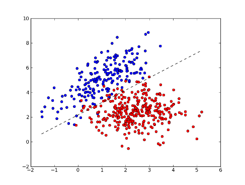

Suppose that we have $n$ observations each of which fall into one of two categories, which for notational simplicity, we will call 0 and 1. We define the response or class vector to be the vector ${\bf y} = (y_1, ..., y_n)$, where $$y_i = \begin{cases} 0 & \text{ if observation $i$ belongs to class $0$}\\ 1 & \text{ if observation $i$ belongs to class $1$} \end{cases}$$
Along with each observation, $i$, we have a vector of $p$ predictor variables, ${\bf x}_i = (x_{i1}, ..., x_{ip})$, that might be considered relevant for predicting which of the two classes the observation belongs. The problem of interest is how to define a prediction rule, $f$, which is a function of the the predictors, $x = ({\bf x}_1, ..., {\bf x}_p)$, such that $f({\bf x}) \approx {\bf y}$.
This section focuses on identifying the most common functions, $f$, that we might like to consider.
Linear discriminant analysis (LDA) aims to find a linear (or planar) boundary between the two classes in the predictor space, and any new observations ar classified according to which region of space their predictors fall into. This is easy to visualize using a simple two-dimensional example, whereby we have two classes (red and blue) and two predictor variables. The figure below shows one predictor variable plotted against the other, and the colour corresponds to the class of each observation. We can see that there is a fairly clear boundary between the two classes based on this two-dimensional predictor space.

However, we note that this boundary line is not perfect, there are some blue points that fall below it and some red points that fall above it, but we note that using a linear boundary it is not possible to perfectly classify every point.
How do we define this LDA boundary? Give the details!
Much like LDA but uses a quadratic boundary instead of a linear boundary Give the details!
Logistic regression can be thought of as a generalized linear model (we will discuss glms further in a later section). Note that in contrast to generalized least squares, which was a generalized method of estimating the coefficients in a standard linear model, generalized linear models generalize the form of the model itself. For instance, suppose that we had a binary outcome, where each individual's response was either a 0 (e.g. non-diabetic) or a 1 (diabetic), and we had a number of predictor variables (age, weight, height, gender, etc). A naive approach to predicting diabetes might be to fit a linear model of the form
$$diabetes = \beta_0 + \beta_1 age + \beta_2 weight + \beta_3 height + \beta_4 gender + \epsilon$$
and then use OLS, GLS, LAD, etc to estimate the coefficients. What's the problem with this approach? First of all, there's no guarentee that once we've fitted the model (estimated the coefficients), that the predicted response, $$\widehat{diabetes} = \hat{\beta}_0 + \hat{\beta}_1 age + \hat{\beta}_2 weight + \hat{\beta}_3 height + \hat{\beta}_4 gender$$ will even be in $\{0, 1\}$, in fact, this is extremely unlikely!
Supposing that we were really attached to the linear model idea, what alternative routes could we take? Perhaps instead of modelling the response itself as a linear combination of our predictors, we could model the probability of the response being $1$ as a function of a linear combination of our predictors (where the function is defined so that we obtain a probability between 0 and 1). More specifically, we could define the logistic regression model given by
$$P(y_i = 1 | x_i) = \frac{e^{\beta_0 + \beta_1x_{i1} + ... + \beta_px_{ip}} }{1 + e^{\beta_0 + \beta_1x_{i1} + ... + \beta_px_{ip}}} = \frac{e^{x_i^T \boldsymbol{\beta}} }{1 + e^{x_i^T \boldsymbol{\beta}}}$$
where as in standard linear regression, we want to estimate the $\beta$. Recall that in standard linear regression, we have $E(y_i | x_i) = x_i^T\beta$, and $Var(y_i | x_i) = Var(\epsilon_i) = \sigma^2$, and if we assumed normality of the $\epsilon_i$'s, we had $$y_i | x_i \sim N(x_i^T\beta, \sigma^2)$$
the corresponding distirbutional result assumed by logistic regression is $$y_i | x_i \sim Bernoulli\left(\frac{e^{x_i^T \boldsymbol{\beta}} }{1 + e^{x_i^T \boldsymbol{\beta}}}\right)$$
Moreover, the log-odds ratio is defined by $$\log \left(\frac{P(y_i = 1 | x_i)}{P(y_i = 0 | x_i)} \right) = \log \left(\frac{P(y_i = 1 | x_i)}{1 - P(y_i = 1 | x_i)} \right) = \log \left( e^{x_i^T \beta} \right) = x_i^T \beta$$
In an attempt to forwshadow later results, we will eventually refer to this the link function for logistic regression. The link function describes how the response is "linked" to the linear combination of the predictors (for standard linear regression, the link function is simply $g(x) = x$).
How do we convert the logistic regression model into class predictions? Given a new sample $x_i^*$, we can plug it into the fitted logistic model
$$P(y_i^* = 1 | x_i^*) = \frac{e^{x_i^{*T} \boldsymbol{\hat{\beta}}} }{1 + e^{x_i^{*T} \boldsymbol{\hat{\beta}}}}$$
and we might define our prediction rule to be
$$\hat{y}_i^* = \begin{cases} 1 & \text{ if $P(y_i^* = 1 | x_i^*) > 0.5$}\\ 0 & \text{ otherwise}\end{cases}$$
so that if the estimated probabiltiy of being in class $1$ is greater than $0.5$, then we predict that the observation is in class $1$. Although we need not use the cutoff of $0.5$, it is not uncommon to use the cutoff that minimizes the misclassification rate (see the next section).
In the previous section, we have discussed how to use logistic regression to obtain a class prediction for an observation. However, to do this, we need to know how to estimate $\beta$. This is not as straightforward as using least squares for the standard linear regression model, whereby we can solve the loss function to obtain a closed form solution.
Recall that the least squares estimate of $\beta$ in the standard linear model corresponds to the maximum likelihood estimate (MLE). The following steps walk us through deriving the MLE for logistic regression, where the MLE estimate for $\beta$ is the value of $\beta$ that maximizes the likelihood function (or, equivalently, the log-likelihood function).
First, assuming that the $y_i | x_i$'s are independent (this assuption is extremely important for inference, but somewhat less important for prediction if we have a proper test set with which to evaluate the prediction accuracy), the likelihood can be split up into
$$L(y_1, y_2, ..., y_n | x) = L(y_1 | x_1) \cdot L(y_2 | x_2) \cdot \dots \cdot L(y_n | x_n) $$
Thus, if we define $\pi_i = P(y_i = 1 | x_i) = \frac{e^{x_i^T \boldsymbol{\beta}} }{1 + e^{x_i^T \boldsymbol{\beta}}} $ to be the true probability that observation $i$ is in class 1, then
$$L(y_1, y_2, ..., y_n | x) = \prod_{i=1}^n \pi_i^{y_i} ( 1 - \pi_i)^{1 - y_i} $$
in which case, the log-likelihood can be written as
\begin{aligned} \ell(y_1, ..., y_n | x) & = \log L(y_1, ..., y_n | x)\\ & = \sum_{i=1}^n \left( y_i \log \pi_i + ( 1- y_i) \log ( 1 - \pi_i)\right)\\ & = \sum_{i=1}^n \left( y_i \log \frac{\pi_i }{1- \pi_i} + \log (1 - \pi_i) \right)\\ & = \sum_{i=1}^n \left( y_i x_i^T \beta - \log \left( 1 + e^{x_i^T \beta} \right) \right) \end{aligned}
where the last equality follows from the fact that $1 - \pi_i = \frac{1}{1 + e^{x_i^T \beta}}$.
To calculate the maximum likelihood estimator of $\beta$, we would need to find the value of $\beta$ that maximizes the above log-likelihood expression. Further, supposing that this value is denoted by $\hat{\beta}_{MLE}$, we could predict the class for a new observation with predictor vector, $x$, by
$$\hat{y} = \begin{cases} 0 & \text{ if } \hat{\pi}^{MLE} = \frac{e^{x^T \boldsymbol{\hat{\beta}}_{MLE}} }{1 + e^{x^T \boldsymbol{\hat{\beta}}_{MLE}}} < 0.5 \\ 1 & \text{ if } \hat{\pi}^{MLE} = \frac{e^{x^T \boldsymbol{\hat{\beta}}_{MLE}} }{1 + e^{x^T \boldsymbol{\hat{\beta}}_{MLE}}} \geq 0.5\end{cases}$$
However, unfortunately, there is no closed-form solution for the maximum of the log-likelihood function given above, implying that we cannot simply find a formula for the MLE estimator. However, fortunatley, we are able to estimate the MLE using numerical methods such as Newton-Rhapson or iteratively weighted least squares (IWLS). The technical details are provided in the appendix for the interested reader.
In the setting where $X$ is high-dimensional (when we have many variables), if we use the MLE to fit models, we are typically faced with the issue of overfitting and instability. More specifically, the decision rules generated in high dimensions will be stable, but the estimates of $\beta$ are not. As a result, the predictions drawn from such models will be innacurate on new data when the model was fit using $\hat{\beta}_{MLE}$. As such, when fitting a model using high dimensional data, we should begin by performing dimension reduction. The are two main approaches to dimension reduction that we will consider here: feature (variable) selection and penalization/regularization.
One way to reduce the dimension of our data is to identify the most informative variables which we will use to build a model. The problem of feature selection hosts a wide array of literature, and a plethora of methods exist. One of the most intuitive, and simple, approaches to feature selection is to simply select the features whose values are most correlated with the response of interest. Alternatively, we could use some prespecified criterion such as the AIC or BIC stepwise procedures which describe how much a model is improved by including or excluding each individual variable (however, the AIC and BIC approaches are not recommended). Another approach is to perform PCA, whereby we could either use the first few principal components (or those who explain the majority of the variability in the data) as our new variables, or if we wished to retain the original interpretability of our features, we could identify the original variables that were the most correlated with the first few principal components.
We will discuss regularization in detail later, but the overall idea is that we can put constraints on the $L^1$-norm of the $\beta$ estimator which has the effect of shrinking many of the coeffecients contained in the $\hat{\beta}$-vector to zero. The variables of interest would be those whose coefficients were non-zero. This estimator of the shrunken coefficients is usually referred to as the lasso estimator.
The general outline of the quadratic iteratively weighted least squares (IWLS) and linear newton-rhapson (NR) iterative approaches both begin by define the initial estimate of $\beta$ to be $\hat{\beta}^{(0)} := \hat{\beta}_{OLS}$. The IWLS approach involves performing iterative quadratic approximations whereby we identify the maximum of the quadratic function at each iteration and use this maximum as the location of the quadratic approximation for the next iteration. In this case, the least squares weight is obtained from the previous iteration. The alternative linear (Newton-Rhapson) approach instead involves solving $\ell^\prime(\beta) = 0$ using iterative linear approximations for which we identify the root in each iteration and use this root as the location for our next linear approximation.
It turns out, however, that the quadratic and linear approximations described above are equivalent, since identifying the maximum of the quadratic approximation to $\ell(\beta)$ coresponds to identifying the root of the linear approximation to $\ell^\prime(\beta)$. Thus, in the details below, we focus on the techincal details of the Newton-Rhapson approach only.
Let's define the score function by
$$U(\beta) = \frac{d \ell(\beta)}{d \beta} = \sum_{i=1}^n \left( y_i x_i - \frac{x_i e^{x_i \beta}}{1 + e^{x_i \beta}}\right)$$
Finding the MLE of $\beta$ corresponds to seeking a solution to $U(\beta) = 0$, and since there is no closed-form solution to this problem, the Newton-Rhapson method estimates a solution to $U(\beta) = 0$ using iterated linear approximations, whereby at each iteration, we aim to improve upon the estimate of the previous iteration.
To begin, we typically set the initial estimator of the logistic regression MLE to be the least-squares estimator of a standard linear regression model:
$$\beta^{(0)} := \hat{\beta}_{LS}$$
Next, the $m$th estimate of $\beta$ is found by solving
$$U^{(m)}(\beta) = 0$$
where $U^{(m)}(\cdot)$ is the linear approximation of $U(\cdot)$ at the estimate obtained from the previous iteration, $\beta = \beta^{(m-1)}$. More specifically, we can estimate the score function at the $m$th iteration, $U^{(m)}(\beta)$, by
$$U^{(m)}(\beta) \approx U\left( \beta^{(m-1)}\right) + \frac{dU}{d\beta} \Big\vert_{\beta = \beta^{(m-1)}} \left( \beta - \beta^{(m-1)} \right)$$
which is reminiscent of a first-order Taylor expantion of $U(\cdot)$ abour $\beta^{(m-1)}$.
Next, setting $U^{(m)}(\beta)$ to zero, and solving for $\beta$ to get $\beta^{(m)}$ the new estimate, we obtain
$$\beta^{(m)} = \beta^{(m-1)} + \left[ - \frac{dU}{d\beta} \Big\vert_{\beta = \beta^{(m-1)}} \right]^{-1} U\left(\beta^{(m-1)}\right)$$
Note that
$$\frac{dU}{d\beta} = \frac{d^2 \ell(\beta)}{d\beta^2}$$
and the observed Fisher information matrix is defined to be
$$I = - \frac{d^2 \ell}{d\beta^2}$$
We now consider the $p$-dimensional case (where the number of variables, $p \geq 1$). In this case, we are trying to
In this case, we are trying to estimate a $p$-dimensional vector, $\beta \in \mathbb{R}^p$, rather than a scalar. Fortunately, an equivalent iterative formula exists for the multidimensional case, where the value of $\beta$ at the $m$th iteration, $\beta^{(m)}$, can be found by calculating
$$\beta^{(m)} = \beta^{(m-1)} + \left[ - \frac{\partial^2 \ell}{\partial \beta_i \partial \beta_j} \Big\vert_{\beta = \beta^{(m-1)}} \right]^{-1} U\left(\beta^{(m-1)} \right)$$
where $U(\beta) = \left( \frac{\partial \ell}{\partial \beta_1}, ..., \frac{\partial \ell}{\partial \beta_p} \right)$. In this case, the observed Fisher information matrix is defined to be
$$I = - \frac{\partial^2 \ell}{\partial \beta_i \partial \beta_j}$$
Note, that in practice, we could replace the Fisher information matrix (whose inverse may be difficult to compute) by something much simpler, such as the identity matrix.